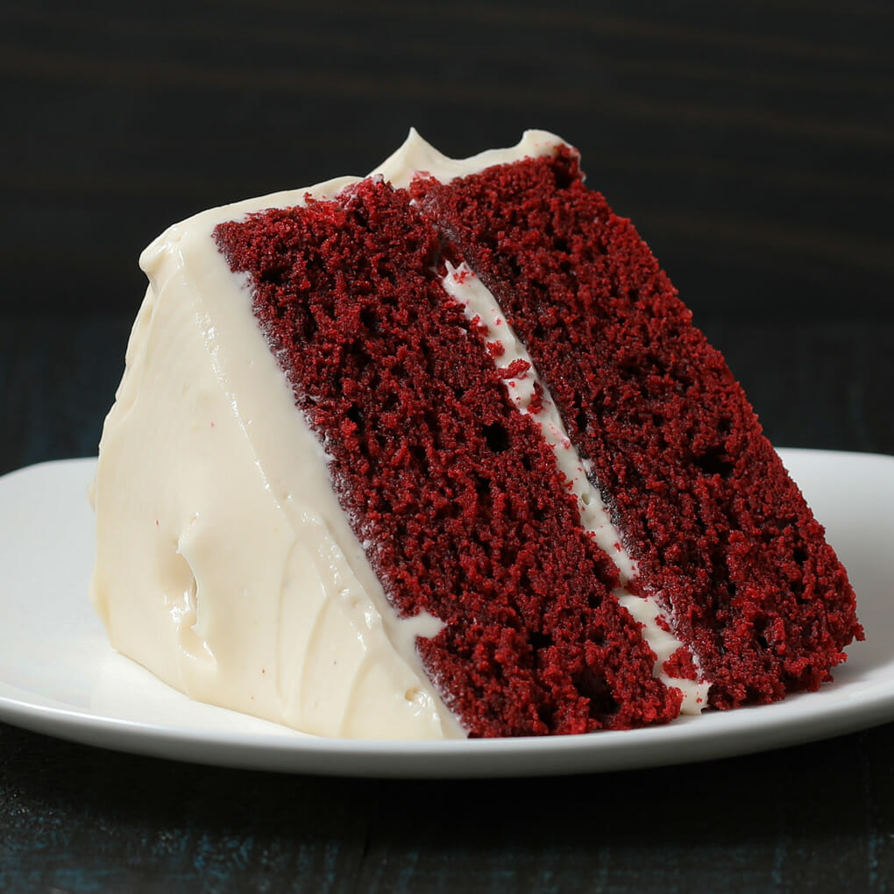

Red velvet cake
Red Velvet Cake is a beloved dessert known for its vibrant red color, tender crumb, and subtle cocoa flavor, complemented by a rich cream cheese frosting. This cake has a unique history and flavor profile, making it a popular choice for birthdays, weddings, and other celebrations. Here’s everything you might like to know about this delightful treat:

- Origins and history
- The exact origin of Red Velvet Cake is somewhat debated, but it’s commonly associated with the southern United States, where it became a staple in American bakeries.
- It first gained popularity in the early 1900s, but the red coloring likely became more pronounced in the 1940s and 1950s when artificial food coloring became widely available.
- Some say it was originally created by the Adams Extract Company in Texas to promote its red food coloring.
- Why "Velvet"? The term "velvet" refers to the cake's soft and velvety crumb. In earlier days, cakes were made with cocoa to soften the protein in flour, creating a finer texture.
- Key Ingredients
- Cocoa Powder: Traditionally, Red Velvet Cake has just a hint of cocoa powder—not enough to make it a chocolate cake, but enough to add depth.
- Buttermilk: This gives the cake a slight tanginess, which complements the cocoa and enhances the cake’s soft texture.
- Vinegar: Vinegar reacts with the baking soda and cocoa to enhance the cake's red color.
- Red Food Coloring: While traditional recipes might get their color from the reaction of cocoa with acidic ingredients, modern recipes often include red food coloring for a more vivid red hue.
- Cream Cheese Frosting: The classic pairing for Red Velvet Cake, this frosting adds a tangy, sweet flavor that complements the cake's richness.
- Flavor Profile
- Red Velvet Cake has a mild chocolate taste, but it isn’t as rich as a chocolate cake. The cocoa flavor is subtle, allowing the other flavors to shine through.
- The tang from the buttermilk and vinegar balances out the sweetness, creating a unique flavor experience.
- The cream cheese frosting adds a creamy, tangy finish that perfectly complements the cake’s soft, tender crumb.
- Color and Variations
- While red is the traditional color, you can experiment with different shades or even try a "blue velvet" or "green velvet" variation.
- Some bakers opt to use natural red food coloring or beet juice instead of artificial dyes for a more natural approach.
- Variations can also include chocolate chips, nuts, or even a layer of berries between the cake layers.
- Tips for the Perfect Red Velvet Cake
- Use Room-Temperature Ingredients: This ensures a smoother batter and even baking.
- Don’t Overmix: Overmixing can lead to a denser cake. Mix just until the ingredients are combined.
- Let It Cool Completely: Red Velvet Cake is tender, so let it cool completely before frosting to avoid crumbs mixing into the frosting.
- Frosting Tips: For a smoother finish, apply a “crumb coat” by spreading a thin layer of frosting over the cake first, refrigerating it, then applying the final coat of frosting.
- Occasions and Popularity
- Red Velvet Cake is popular for special occasions due to its eye-catching color and unique flavor.
- It’s commonly seen at weddings, Valentine’s Day, and Christmas, but it can be enjoyed anytime!
Cream Cheese Frosting
Beat Cream Cheese and Butter
- Visual:
- In a large bowl, beat the softened cream cheese and butter together until smooth and creamy.
- Tip:
- Use room-temperature ingredients for a smoother frosting.
Add Powdered Sugar and Vanilla
- Visual:
- Gradually add the powdered sugar, beating until smooth. Finally, add vanilla extract and beat again.
- Tip:
- Taste the frosting. If it’s too sweet, add a pinch of salt.
Frost the Cake
- Visual:
- Place one cake layer on a plate and spread a layer of frosting on top. Add the second cake layer and frost the top and sides of the cake.
- Tip:
- Use a spatula to smooth out the frosting and add decorative swirls if desired.
Finishing Touches
For an extra touch, crumble some of the cake trimmings on top or add fresh raspberries. Slice, serve, and enjoy your beautiful Red Velvet Cake!